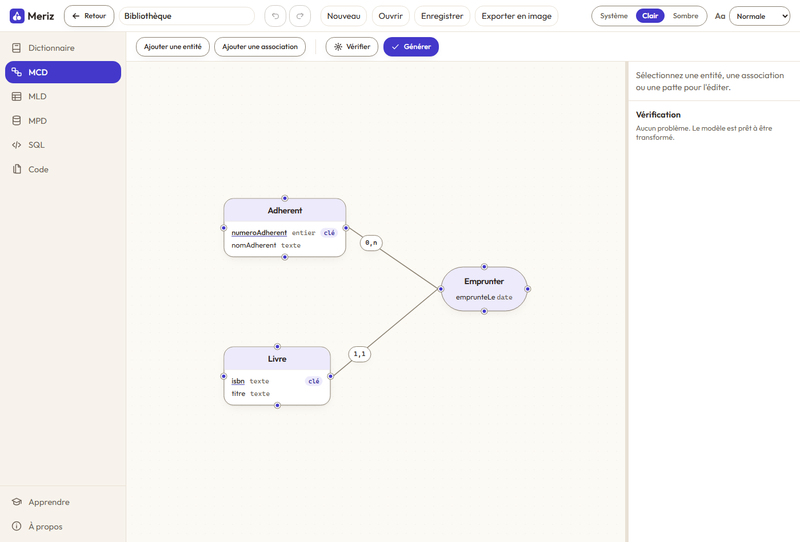

Le dictionnaire des données
La liste maîtresse des propriétés. Chaque donnée est définie une seule fois, avec son type, puis placée dans une entité ou une association.
Meriz est un outil en ligne pour concevoir des bases de données avec la méthode Merise. Vous dessinez le modèle conceptuel, l'outil le vérifie, puis il en tire le modèle logique, le modèle physique et le script SQL. Il sert aussi à apprendre la méthode et à l'enseigner.
Gratuit, libre, sans compte obligatoire. Vos modèles restent sur votre appareil tant que vous n'ouvrez pas de compte.

Meriz suit le chemin de la méthode, étape par étape. Vous ne saisissez que les deux premières : le reste se calcule.
La liste maîtresse des propriétés. Chaque donnée est définie une seule fois, avec son type, puis placée dans une entité ou une association.
Entités, associations, cardinalités. La vérification signale les problèmes au fur et à mesure : identifiant manquant, propriété placée deux fois, patte orpheline.
Les tables, les clés étrangères et les tables de jonction, obtenues par les règles de passage. Les types SQL n'apparaissent qu'au modèle physique, et restent modifiables colonne par colonne.
Le script CREATE TABLE pour MySQL ou PostgreSQL, à copier ou à
exporter. Et, si vous codez, les migrations et les entités pour Laravel ou
Symfony.
Dix-sept règles sont contrôlées en continu, et chaque problème se clique pour atteindre l'élément en cause. Un modèle qui passe la vérification est un modèle transformable.
Une page d'apprentissage suit le même exemple du début à la fin, et les messages de l'outil nomment les règles de Merise plutôt que des codes d'erreur.
Dans le navigateur, sans rien installer, ou en logiciel pour Windows, macOS et Linux. Le même modèle, le même format de fichier.
Classes, devoirs, rendus, corrections commentées, cours, groupes de travail et co-édition en direct : l'outil sert au cours entier, pas seulement au dessin.
Tout se fait sans souris, les contrastes sont tenus au niveau AA, et jamais une information n'est portée par la seule couleur.
Code ouvert sous licence AGPL 3.0. Rien n'est enfermé : vos fichiers sont à vous, et le logiciel aussi.
Rien à installer pour essayer : l'outil s'ouvre dans le navigateur et garde votre travail sur votre appareil. Si vous préférez un logiciel, la version bureau existe pour les trois systèmes.